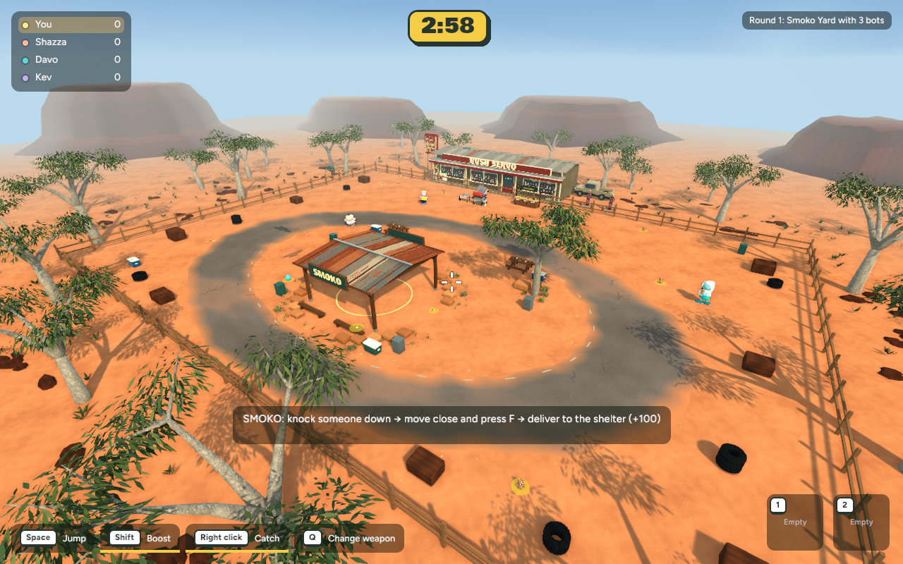
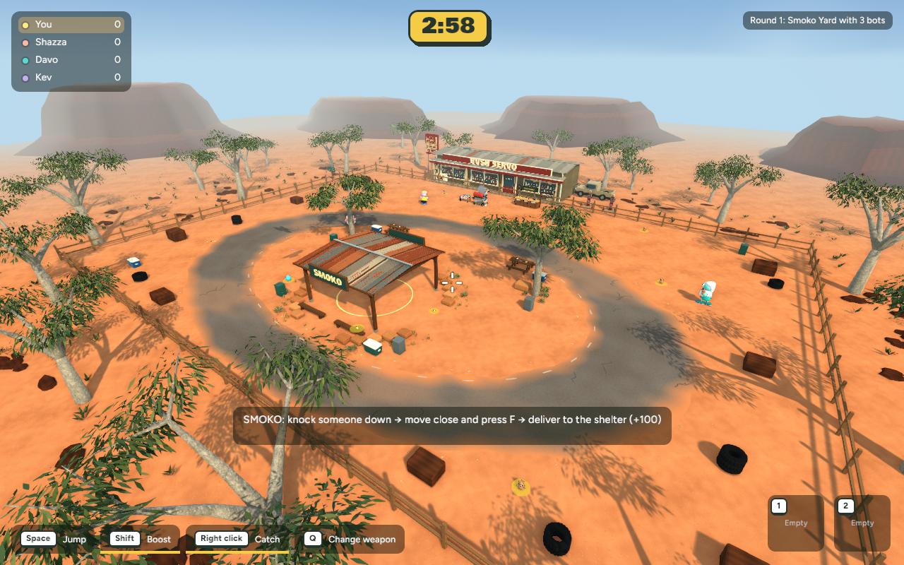
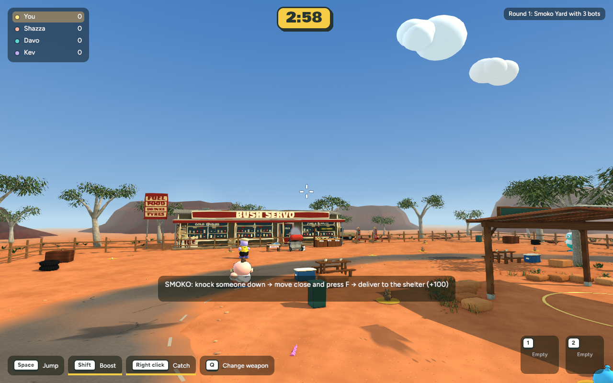
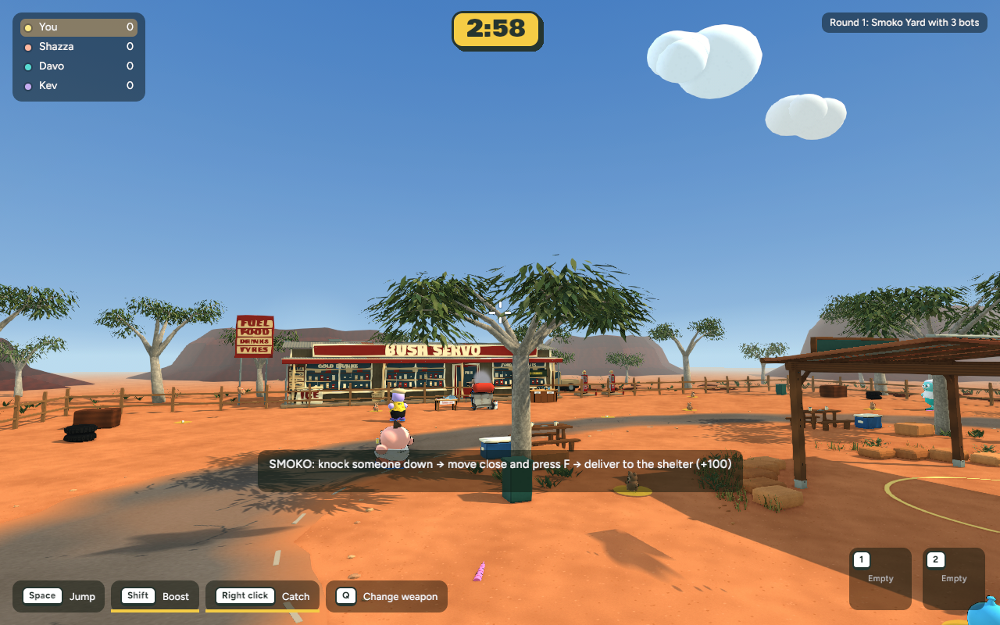
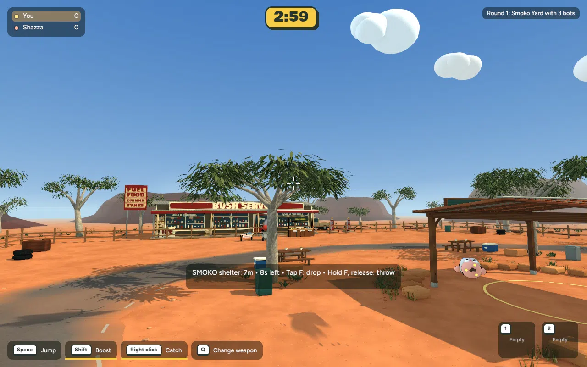

Actual game captures — 30 October 2026. The first tree is preserved; a shorter second specimen now frames the opposite side. Exterior scenery unchanged.
Two different canopies, planted bases, shared solid trunks and clear road/delivery routes. Existing Poly Haven bark reused through Blender MCP. Local review; no publication.





Second tree: +5,364 triangles and +302,916 bytes; unchanged material batches and textures. Near-view cost approximately +0.3 ms in repeat checks. Overview timing varies. Native and WebAssembly builds pass; 690 tests pass, one existing test ignored. Browser-device performance remains unmeasured.
Lower trunks are solid; high branches are decorative. Protocol 23 requires matching versions when published.
Full measurements, changes and recovery